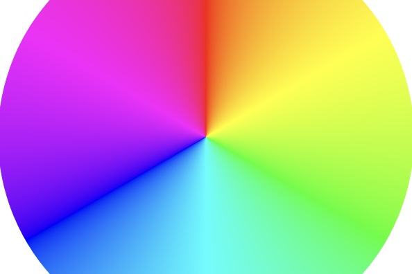
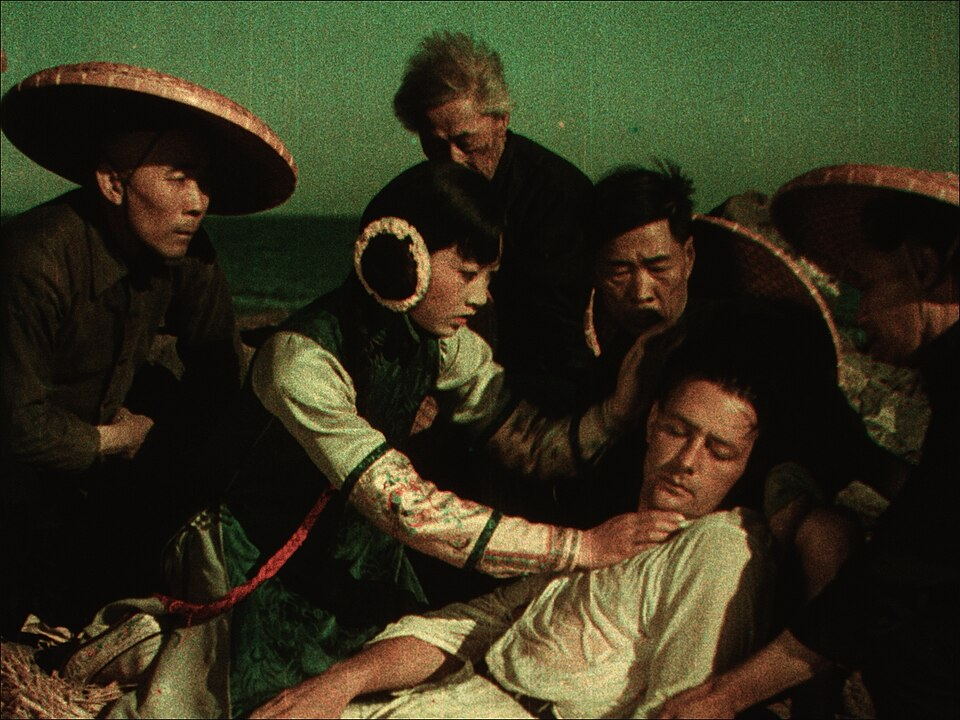
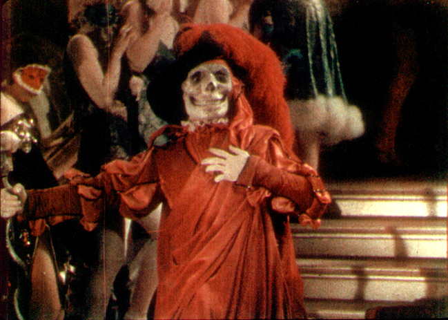
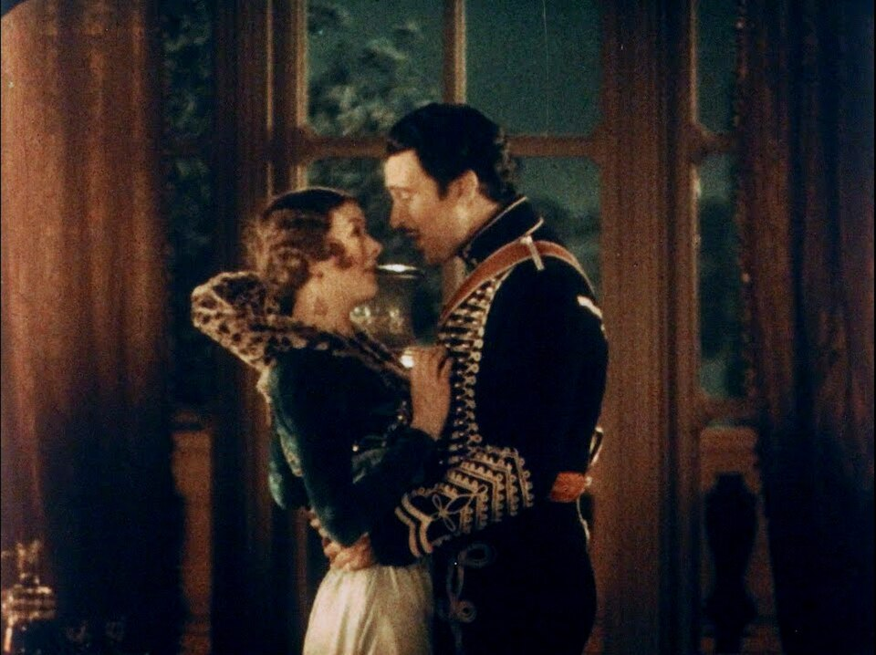

a
b

Original
After White Balance
Red
Green
Blue
Green+Blue
Select sample image:
Checker
Bars

Circle
Test

The Toll of the Sea, 1922
Anna May Wong （竖排）霜柳黄
and Kenneth Harlan

The Phantom of the Opera, 1925

Bride of the Regiment, 1930
Myrna Loy and Walter Pidgeon